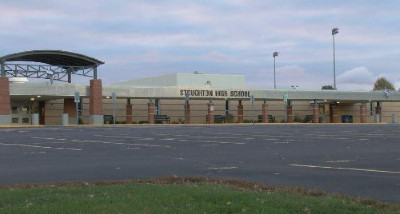
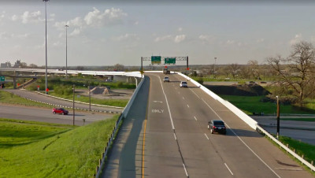
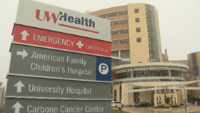

News of the week

After armed threat outside Stoughton High School, miscommunication leads to students running toward potential danger
A miscommunication between police and Stoughton school officials on an armed suspect situation led to some students running in panic toward a potential threat Monday. Stoughton Police told 27 News they were made aware of an armed subject near Stoughton High School Monday morning. By 10:02 a.m., that subject had been detained, but police believed there may have been an item left behind by the subject in the school's parking lot. Out of an abundance of caution, police asked the school to issue a soft lockdown while they scoped out the school parking lot, meaning students would stay inside with the doors locked and go about their normal routine.

Assembly expected to pass Highway Responder Safety Zone Bill
MADISON (WKOW) -- The measure increases the penalties for traffic violations that happen near emergency zones -- those are areas within 500 feet of an authorized emergency vehicle with flashing lights, like a police car, fire truck or tow truck. The bill comes from Republican Senator Joan Ballweg. She told WBAY, "The public needs to respect that they’re doing tough work helping folks when they’re in need and make sure that they pay attention." Under the bill, if a driver causes a crash that hurts someone, they could face up to nine months in jail, a fine of up to $10,000 or both.

Appleton man first patient for new heart disease treatment at UW Health
According to a news release from UW Health spokesperson Emily Kumlien, investigational therapy is designed to treat chronic myocardial ischemia (CMI). CMI stems from reduced blood flow to the heart, often caused by blockages in coronary arteries. The nature of CMI makes it difficult to treat with traditional medicine, but also does not leave patients in a position to get a stent or bypass surgery. According to Dr. Amish Raval, who is leading the investigational cell therapy trial at UW Health, the treatment will ideally provide a path forward for the 75,000 Americans diagnosed with CMI every year.“Patients with CMI are often desperate to find relief after suffering for years with debilitating symptoms, and this therapy, if proven successful during this trial, could become not only the first cell therapy of its kind for heart disease but a real gamechanger for these patients in particular,” Raval said in the release. The treatment uses the body's own bone marrow cells, delivered to the heart through a minimally invasive catheter, in an attempt to stimulate the healing response. For trial patient Donald Krause, the treatment offers hope for a long life.
Background of Wkok
We are owned by Allen Media Broadcasting. Nulla luctus mi at orci sodales, a placerat erat consequat. Vestibulum vitae convallis libero, at malesuada neque. Aliquam dictum elementum commodo. Sed non risus placerat, interdum lacus vel, mattis justo. Vivamus eu neque id odio porta pulvinar. In ornare neque ut magna posuere, a auctor sapien iaculis. Sed viverra ante tellus, vitae commodo felis accumsan ac. Pellentesque vel hendrerit arcu, condimentum porta mi.